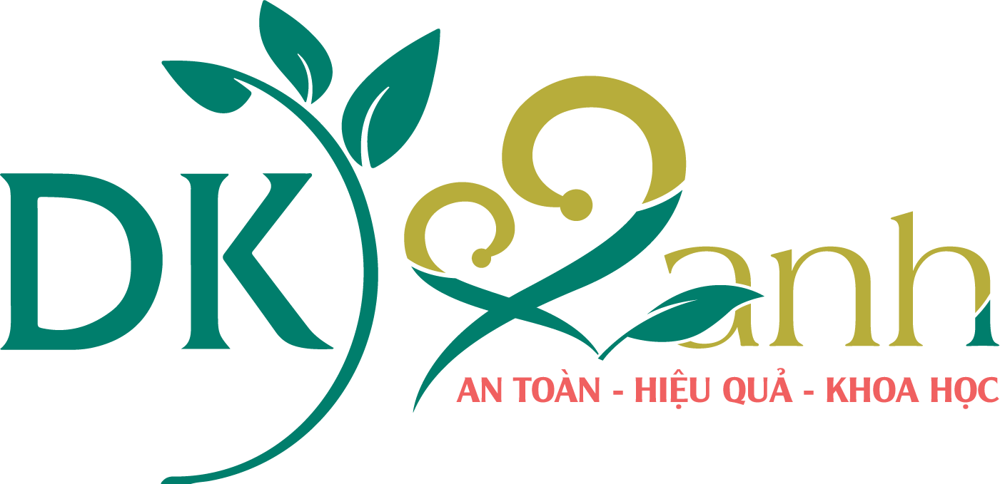
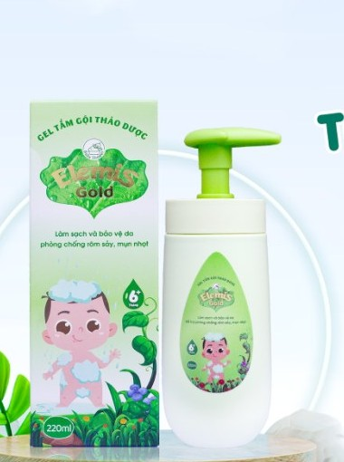
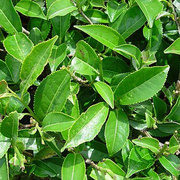
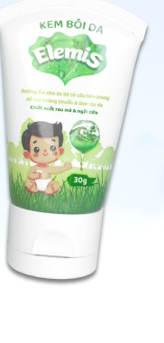

Điểm mạnh: kim ngân và hương nhu — không có trong thành phần Dr.Papie, Kutieskin công bố. Khách hỏi “sao Gold đắt hơn” thì đây là câu trả lời cụ thể.
Nói với khách: “Bé mẩn ngứa nhiều thì mẹ dùng bản Gold, có thêm kim ngân làm dịu da, lại giữ ẩm tốt hơn.”
Lưu ý: chỉ dùng cho bé từ 6 tháng; giá cao nhất nhóm. Gold không có sài đất, khổ qua, kinh giới, tràm gió → đừng nói “Gold có mọi thứ bản thường có”. Web ghi “100% thảo dược”, “hăm da, viêm da” nhưng không có trong công bố → không nhắc lại.
